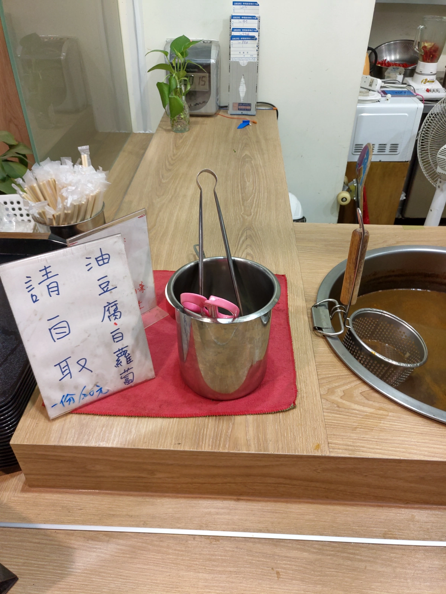

[竹北] 初這家麵食館
| 餐廳名稱: | 初這家麵食館 |
|---|---|
| 地 址: | 新竹縣竹北市文興路二段178號 |
| 營業時間: | 11:00~14:00 / 16:30~21:00 |
| 電 話: | 03 668 8563 |
今天介紹一家堪吃的平凡店家，雖然平凡，如果想迅速填飽肚子，不要花太多錢的話， 還是要多收集一些這種餐廳，平常可以來吃。
這一帶是靠近高鐵 暐順經貿大樓 的文興路對面，暐順購物中心似乎蠻慘的， 就像當年的風城，很沒人氣，直到巨城接手才有改善。 裡面的美食街曾經吃過一家，不大行，還有一些店擺明了只做週一到週五， 正常百貨公司會允許這種只開五天的店嗎，一定是開了就賠錢，店家才不開。 只剩 週一到週五，可以吸引一些附近的辦公室的人前來用餐吧。 來到暐順購物中心，我看還是到對面吃這些店家，也比它的美食街強。
初這家麵食館 的 店門口。

屋內的裝潢，還蠻新的，看它的FB官網，沒啥維護，是2018年開的。
廚房的外圍，列了部分菜單。
廚房的外圍的左手邊，如果點了油豆腐，要到這裡拿。不過今天約七、八點到，服務生說會送來。 
初這家麵食館 菜單。

牛肉乾拌麵，免費的仙草，走心油豆腐。
滷肉飯，紅油抄手。老婆女王大人覺得紅油抄手算好吃。
最後結帳帳單。
每一樣口味都很正常，看網路上有些負評是服務態度不大好，唉，不要刁難人家了啦， 才多少錢，是要堆多大的笑臉。大概 就是乾淨，不要用黑心食材，價格合理，就好了， 這間適合平常日，簡單迅速地吃一頓，然後回家忙功課。